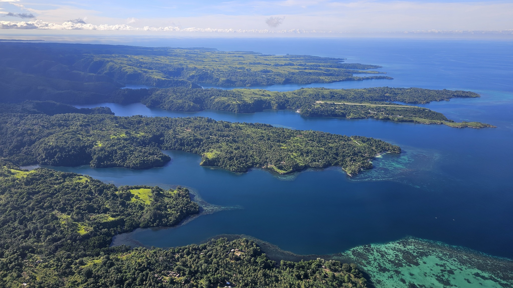
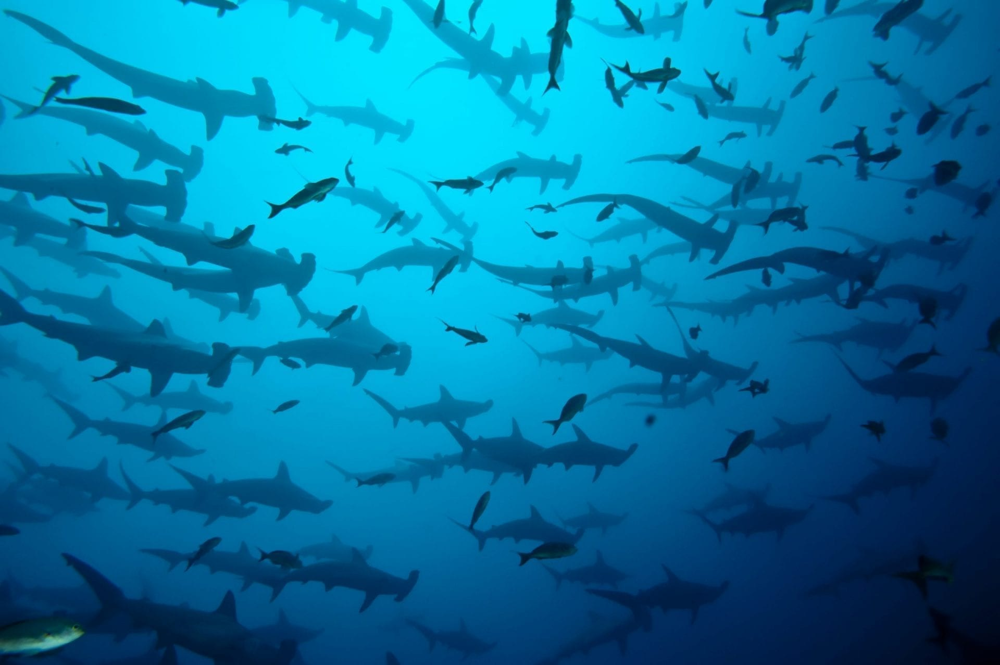

There are places in the world that call you back. Not once, not twice, but again and again. For divers who have experienced the magic of Tufi, the feeling is visceral—an almost physical pull toward the dramatic fjords of Oro Province, where the rainforest plunges into crystal-clear water and the ocean floor drops away into the abyss. Here, in this remote corner of Papua New Guinea, hammerhead sharks patrol the drop-offs in numbers that defy belief, and giant moray eels lurk in crevices, their prehistoric forms a reminder of the ancient world that thrives beneath the surface.
As someone who has logged hundreds of dives in Tufi's waters and watched countless divers emerge from the depths with expressions of pure wonder, I can tell you why people keep coming back. It's the hammerhead schools that appear like ghosts from the deep. It's the giant moray eels that allow divers to approach within inches. It's the vertical walls that plunge thousands of meters into the ocean, creating a sense of infinity that is both humbling and exhilarating. And it's the knowledge that in Tufi, every dive is different, and the next encounter could be the one that changes everything.
Tufi's Underwater World
Where tropical rainforest meets vertical drop-offs, creating one of the world's most spectacular diving destinations.
The Tufi Fjords: A Geological Wonder
The fjords of Tufi are not true fjords—they are rias, drowned river valleys carved by ancient waterways and flooded when the seas rose at the end of the last ice age. But the effect is the same: dramatic, steep-sided inlets that cut deep into the mainland, their walls covered in dense tropical rainforest that reaches all the way to the water's edge. The result is one of the most stunning landscapes on earth, a place where the green of the jungle meets the blue of the sea in a collision of color that is almost too vivid to be real.
There are more than a dozen major rias in the Tufi area, each with its own character, its own dive sites, its own secrets. What they share is the geology that makes Tufi's diving so extraordinary: the steep drop-offs that plunge from the shoreline to the deep ocean, creating vertical walls that are home to an astonishing diversity of marine life.
The Hammerheads of Tufi

Ask any diver why they keep returning to Tufi, and the answer is almost always the same: the hammerheads. Tufi's waters are home to one of the most reliable hammerhead shark aggregations in the world, with schools of scalloped hammerheads—some numbering in the dozens—regularly patrolling the drop-offs that define the fjords' outer edges.
What makes the hammerhead encounters in Tufi so special is the setting. The sharks are not hiding in the murky depths of a far-off seamount; they are cruising the vertical walls that begin just meters from shore, in water that is often startlingly clear. Divers can position themselves on the drop-off, hovering at 20 or 30 meters, and watch as the sharks emerge from the blue—first one, then a few, then a school, their distinctive hammer-shaped heads sweeping back and forth as they hunt.
The best hammerhead sightings are typically during the early morning hours, when the sharks are most active. But encounters can happen at any time, and the unpredictability is part of the magic. You never know when a hammerhead might glide into view, and the moment it does—the moment you see that unmistakable silhouette in the blue—is a thrill that never diminishes, no matter how many times you've experienced it.
Best Hammerhead Sites
- The Point – The most famous hammerhead site in Tufi, where the fjord opens into the sea and the drop-off creates a natural corridor for sharks. Regular sightings of schools of 20 or more.
- Laluoro – A dramatic wall that attracts hammerheads throughout the year. Also excellent for reef sharks and pelagic fish.
- Bubu – A site known for hammerheads in the early morning and late afternoon. The topography creates perfect hunting grounds for these magnificent sharks.
- Wall of Silence – A spectacular vertical drop that consistently delivers hammerhead encounters, particularly during the cooler months.
The Moray Eels of Tufi

While hammerheads are the headline act, the moray eels of Tufi are equally legendary. Tufi's walls and crevices are home to an extraordinary population of giant moray eels—some of the largest and most approachable in the world. These magnificent creatures, which can reach lengths of three meters or more, have become accustomed to divers over decades of responsible interaction, allowing for close encounters that are simply not possible in most destinations.
The moray eels of Tufi are famous for their tolerance of divers. Many have their own names, their own territories, and their own personalities. There's the massive eel at Bubu that has been observed by divers for over a decade; the curious eel at The Point that often emerges from its crevice to investigate; the shy eels that hide in the deeper recesses of the wall, visible only to those who look carefully.
What makes the moray encounters so memorable is the intimacy. You can approach these eels, hover within inches, and watch as they breathe, their mouths opening and closing in the rhythmic pattern that gives them their distinctive appearance. The colors—the mottled patterns of brown and gold, the pale undersides—are revealed in detail that photographs can only hint at. And when an eel emerges fully from its crevice, its powerful body undulating as it moves along the wall, the experience is nothing short of awe-inspiring.
Other Marine Life
While hammerheads and morays are the stars, Tufi's waters are home to an incredible diversity of marine life:
- Reef Sharks – Grey reef sharks, whitetip reef sharks, and blacktip reef sharks are common along the walls and in the channels.
- Tuna and Mackerel – Schools of tuna and mackerel are often seen patrolling the drop-offs, along with other pelagic species.
- Barracuda – Large schools of barracuda, their silver bodies flashing in the sunlight, are a common sight.
- Turtles – Green and hawksbill turtles are frequently encountered, often resting on the walls or cruising along the drop-offs.
- Reef Fish – An extraordinary diversity of butterflyfish, angelfish, parrotfish, and other reef species inhabits the shallower sections of the walls.
- Coral Gardens – The walls are encrusted with a spectacular array of hard and soft corals, creating a living tapestry of color.
The Diving Experience
A typical day of diving in Tufi begins early. The best hammerhead sightings are often in the morning, and divers want to be on the walls as the sun rises, when the sharks are most active. You'll dive from one of Tufi Resort's modern dive boats, with experienced local guides who know every wall, every crevice, every hammerhead patrol route.
The diving in Tufi is drift diving, with divers following the walls as the current carries them along. The sensation is exhilarating—you're suspended in the blue, the wall sliding past, the abyss below, and the occasional shape of a shark materializing from the depths. The walls themselves are spectacular, covered in a dense carpet of marine life that rewards close inspection. Even when the hammerheads aren't present, there is always something to see: a giant moray emerging from its lair, a turtle resting on a ledge, a school of barracuda swirling in the current.
After a morning of diving, you'll return to Tufi Resort for a hearty breakfast and some rest. Many divers use the surface intervals to download their photos, charge their cameras, and share the morning's sightings. The afternoon brings another dive, often on a different site, and then a second dive or a night dive, depending on the schedule.
Why Divers Keep Returning
Ask any repeat visitor to Tufi why they keep coming back, and you'll hear a variety of answers. For some, it's the hammerheads—the chance to see these magnificent sharks in such a pristine setting is a draw that never diminishes. For others, it's the moray eels—the intimacy of the encounters, the sense of connection with these ancient creatures. For many, it's the combination of everything: the stunning scenery, the world-class diving, the warm hospitality of the local people, and the knowledge that Tufi is one of the last truly wild places on earth.
But there's something else, too. There's the sense that in Tufi, you're diving in a place that has not been changed by mass tourism. The reefs are healthy. The shark populations are robust. The moray eels are not stressed by crowds of divers. And every dive has the potential to deliver something extraordinary—a hammerhead school of unprecedented size, a giant moray never seen before, an encounter that becomes part of the lore of this special place.
Planning Your Tufi Diving Expedition
Best Time to Visit
Tufi offers year-round diving, but the best conditions for hammerhead sightings are typically from September to December and March to May. During these periods, visibility is excellent, water temperatures are warm (27-30°C/80-86°F), and shark activity is high. The dry season (May-October) offers the most stable weather.
Getting There
Tufi is accessible via flights from Port Moresby to Tufi Airport with PNG Air. The flight offers spectacular views of the coastline and the fjords. From the airport, Tufi Resort is a short drive away. All transfers can be arranged as part of your dive package.
Accommodation
Tufi Resort is the premier diving resort in the region, offering comfortable bungalow accommodation with stunning views of the fjords. Each bungalow features en-suite facilities, air conditioning, and a private veranda. The resort's restaurant serves excellent meals, and the dive center is fully equipped for photographers, with camera tables, charging stations, and storage.
What to Bring
- Camera equipment – Wide-angle lens for hammerhead schools and wall shots; macro lens for moray eels and reef life
- Dive gear – Available for rent, but personal equipment recommended for comfort
- Exposure protection – 3mm wetsuit sufficient for most divers; 5mm for those who feel the cold
- Dive computer and compass – Essential for drift diving
- Surface interval gear – Light clothing, sun protection, camera gear for editing
- Travel insurance – Comprehensive coverage including diving to 30m
- Mosquito repellent – Particularly for the resort in the evenings
Why Book Your Tufi Diving Experience With Bismark Touris?
As a trusted partner of Tufi Resort, Bismark Touris offers exclusive access to the region's premier diving experiences. Our packages include:
- Preferred booking – Priority access to Tufi Resort's limited accommodation
- Expert dive guides – Local guides with decades of experience in Tufi's waters
- Complete dive packages – Accommodation, meals, dives, and equipment all arranged
- Hammerhead-focused itineraries – Designed to maximize encounters
- Photography support – Camera tables, charging stations, and photography advice
- Extended dive packages – Custom itineraries for serious shark enthusiasts
Conservation and Responsible Diving
The hammerhead sharks of Tufi are a precious resource, and their continued presence depends on responsible diving practices. We follow strict guidelines to ensure minimal impact on these magnificent animals:
- No chasing or herding – Sharks are allowed to approach on their own terms
- Perfect buoyancy – Essential for avoiding damage to the walls
- No touching – Sharks and moray eels are wild animals; respect their space
- Limited diver numbers – Group sizes are kept small to avoid stress
- Support for research – Tufi Resort supports ongoing research into shark populations
The sharks and moray eels of Tufi have been protected for decades, and the result is a destination that offers encounters that are simply not possible in most parts of the world. By diving responsibly, you help ensure that future generations of divers can experience the same magic.
Frequently Asked Questions
What are my chances of seeing hammerhead sharks?
During peak season (September-December and March-May), hammerhead sightings are very reliable. Schools of 10-30 sharks are common, and individual sharks can be seen throughout the year. Your chances are highest on early morning dives at the key hammerhead sites.
Are the moray eels dangerous?
Moray eels are generally not aggressive toward divers, but they are wild animals with powerful jaws. Our guides ensure that divers maintain a respectful distance. The eels of Tufi are accustomed to divers and are often curious, but they should never be touched or provoked.
What is the photography like in Tufi?
Tufi is one of the world's premier destinations for underwater photography. The combination of large pelagics (hammerheads, barracuda, tuna) and macro subjects (moray eels, nudibranchs, reef fish) creates opportunities for every style of photography. A wide-angle lens is essential for hammerhead schools and wall shots; a macro lens is useful for the moray eels and reef life.
How many dives can I do per day?
Tufi Resort offers up to 4 dives per day, including night dives. A 7-night stay typically includes 20-25 dives. Many divers choose to focus on early morning hammerhead dives, with additional dives later in the day exploring the walls and shallower reefs.
What is the cost of a Tufi diving package?
Prices vary based on accommodation, number of dives, and length of stay. A 7-night package at Tufi Resort including 5 days of diving typically starts from PGK 4,500 per person (based on 2 people sharing). Contact us for a personalized quote.
Book Your Tufi Diving Adventure
Limited availability at Tufi Resort. Early booking is essential to secure accommodation and guide availability for this world-famous diving destination.
Phone: +675 76769513
WhatsApp: +675 76769513
Email: info@bismarktouris.com
Book by June 2026 to secure the best accommodation and guide availability!